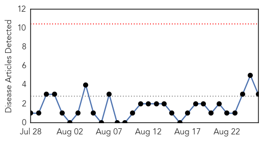

Mumps
30-Day Web Trend
6 alerts, 0 warnings

30-Day Twitter Trend
1 alerts, 0 warnings

Article Locations
Article Confidences

Top Articles:
Top Tweets:
- 0.926
- RT: U Illinois mumps outbreak nears 100, health officials advise on prevention | Outbreak News Today http://t.co/ByFmc2ujvg
Swine Flu
30-Day Web Trend
0 alerts, 0 warnings

30-Day Twitter Trend
0 alerts, 0 warnings

Article Locations

Article Confidences

Top Articles:
Top Tweets:
-
No tweets found for Aug 26, 2015